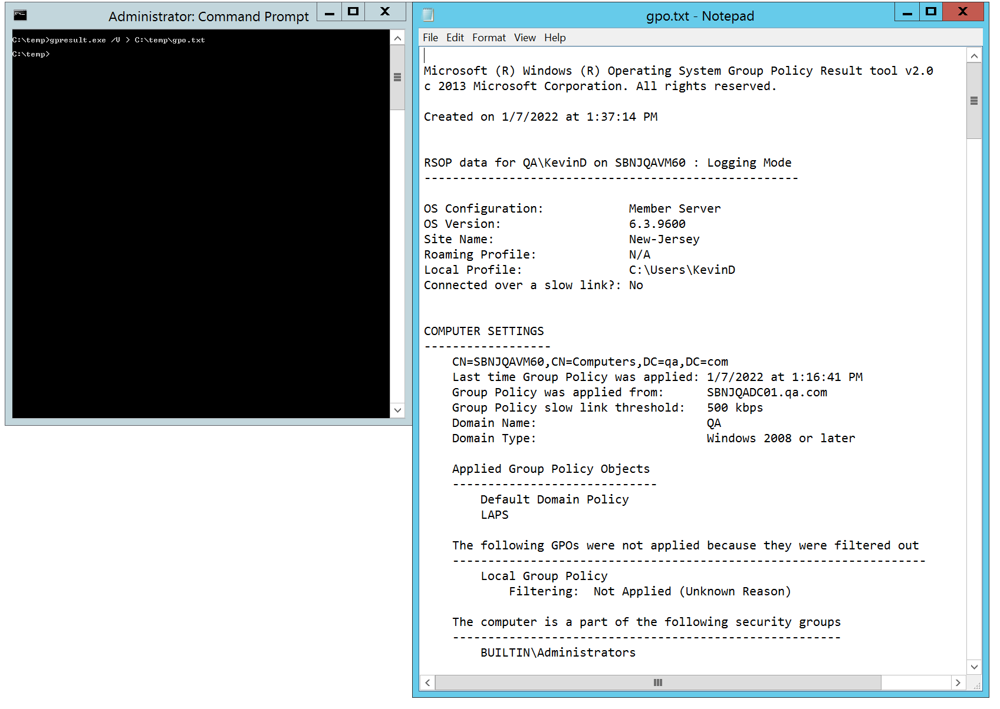
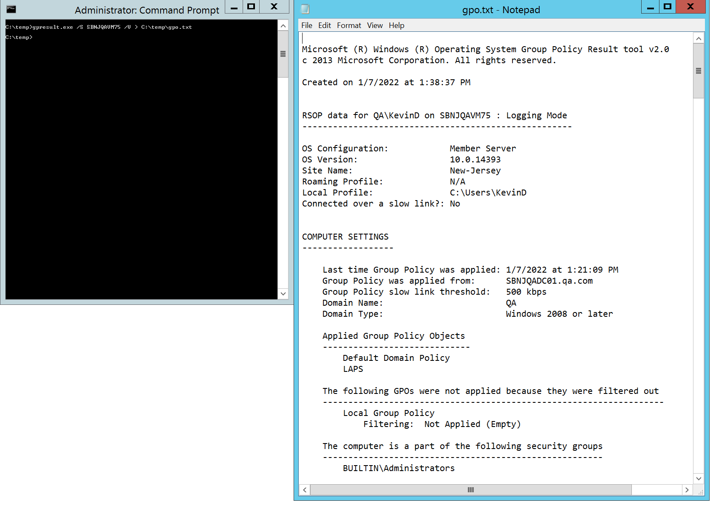

Summary: This will provide instructions on how to export all GPO settings for troubleshooting
Issue: In some cases dev requests all GPO settings to troubleshoot issues
Instructions:
The following commands can be used to export all GPO settings from systems…
Exporting All GPO Settings from Local system…
gpresult.exe /V > C:\temp\gpo.txt

Exporting All GPO Settings from Remote system…
gpresult.exe /S TestSystemName /V > C:\temp\gpo.txt

Channel: Internal
Submitted by: Kevin Duddy
Product: All
Affected Versions: N/A
Affected Module: GPO
Dev Ticket: N/A
Resolved In Version: N/A
KB Type: How To